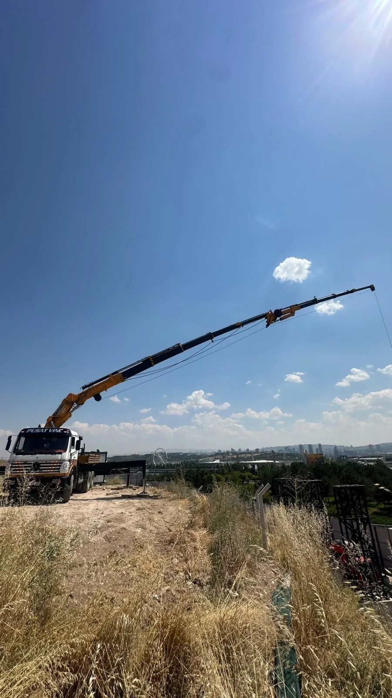
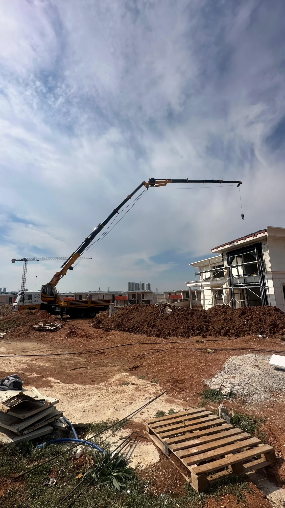
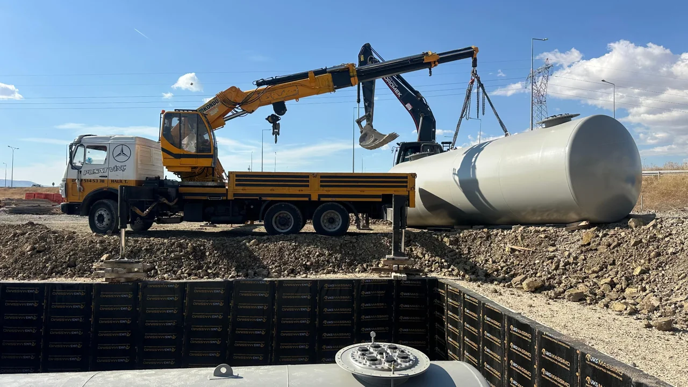

Bir araç.
Birçok iş.
Kamyon üzeri vincimizle yük kaldırma, yerleştirme ve montaj desteği için sahadayız. Doğrudan iletişim kurar, işin ayrıntılarını birlikte netleştiririz.
Kamyon üzeri vinç sistemiAnkara ve çevresinde kamyon üzeri vinç hizmeti. Yük kaldırma, yerleştirme ve montaj desteği için işin başında Pusat Vinç var.

Her yükün, her sahanın koşulları farklıdır. Kapasite ve erişimi işinize göre birlikte değerlendirelim.

Şantiyede, montajda, yükün yanında. Konumu ve yapılacak işi paylaşın; çalışma zamanını birlikte planlayalım.
Hizmet bölgesiAnkara ve çevresi
EkipmanKamyon üzeri vinç
Planlamaİşinize göre değerlendirme
Çalışma saatleriEsnek, iş planına göre
01 / Vincimizi tanıyın
İşin ihtiyacını konuşur, sahayı ve yükü birlikte değerlendiririz. Her operasyonun planı kendine özeldir.

Kamyon üzeri vincimizle yük kaldırma, yerleştirme ve montaj desteği için sahadayız. Doğrudan iletişim kurar, işin ayrıntılarını birlikte netleştiririz.
Kamyon üzeri vinç sistemiKaldırma kapasitesi ve erişim, yükün ağırlığına, mesafesine ve saha koşullarına göre değerlendirilir. İşinizin detaylarını paylaşın, uygunluğu birlikte konuşalım.
Yük, mesafe ve saha değerlendirmesiŞantiye girişinden yükün yerleşeceği noktaya kadar çalışma alanını ele alırız. Tarih ve saat planını işinizin ihtiyacına göre birlikte oluştururuz.
Sahanızı konuşalım02 / Neler yapıyoruz?
Aynı araç, farklı saha ihtiyaçları. Yapılacak işi, yükü ve çalışma alanını paylaşın; uygun çözümü birlikte planlayalım.
Yükünüzün bulunduğu noktadan alınması ve çalışma alanında belirlenen yere yerleştirilmesi. Ağırlık, mesafe ve zemin bilgisi üzerinden işe uygunluk değerlendirilir.
Tank ve benzeri ekipmanların konumlandırılması için vinç desteği. Ekipmanın boyutları, ağırlığı ve montaj alanına erişim, çalışma öncesinde birlikte ele alınır.
İnşaat sahalarında malzeme kaldırma ve yerleştirme ihtiyaçları için destek. İşin niteliğine ve sahanın durumuna göre çalışma planı oluşturulur.
Farklı bir kaldırma işiniz mi var? Konumu, yükün fotoğrafını ve yapılacak işin açıklamasını WhatsApp'tan paylaşın. Uygunluğu ve çalışma zamanını konuşalım.
Ankara ve çevresinde kamyon üzeri vinç hizmeti veriyoruz. Çalışma konumunuzu paylaşarak sahanızın uygunluğunu ve çalışma zamanını birlikte değerlendirebiliriz.
Teklif için yükün türü, yaklaşık ağırlığı, çalışma konumu, erişim mesafesi ve planlanan zaman birlikte değerlendirilir. İşin detaylarını telefon veya WhatsApp üzerinden paylaşarak fiyat bilgisi alabilirsiniz.
Kaldırma kapasitesi ve erişim, yükün ağırlığına, mesafesine ve saha koşullarına göre değerlendirilir. İşinizin bilgilerini paylaşın; mevcut vincin işe uygunluğunu birlikte konuşalım.
Çalışma konumu, yapılacak iş, yükün yaklaşık ağırlığı ve ölçüleri ile planladığınız tarih yeterli bir başlangıçtır. Varsa yükün ve sahanın fotoğraflarını WhatsApp'tan iletebilirsiniz.
Konumu, yükün yaklaşık ağırlığını, fotoğrafını ve yapılacak işi paylaşın.
Erişimi, çalışma alanını ve ekipmanın işe uygunluğunu konuşalım.
İşin kapsamı ve ücretini netleştirip size uygun çalışma zamanını belirleyelim.
05 / Doğrudan iletişim
Ankara ve çevresindeki vinç ihtiyaçlarınız için arayın veya işinizin detaylarını WhatsApp'tan paylaşın.
0542 514 53 38Bilgilerinizle bir WhatsApp mesajı hazırlayalım.